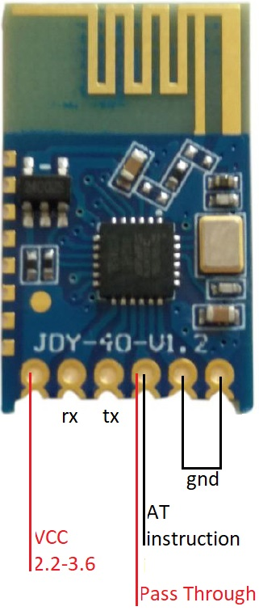

JDY40

This device has a 120M range and is configured via AT commands
- AT+BAUD (Show the current baud rate)
- AT+RFID (Show the Wireless ID
- AT+DVID (Show the device ID
- AT+RFC (Show the channel 1..128
- AT+POWE (Transmit power) (0..9)
Purchasing
This item is available on ebay for less than $2.00. Search for "10Pcs JDY-40"
Reference
Users Manual
Notes:
The UwTerminalX (See setup directory) is the only known terminal program that can interface with this device
I used a cp2102 configured for 3.3V output
Here is a snapshot of a working configuration:
Don't use nano 3.3V to power device(not enough power)
DVID and RFID should match for two units to communicate
Can use TX of Nano to transmit to other device
Can use Diode to reduce voltage of 18650 within range
Tx pin actually receives data, if only receiving, ground rx pin